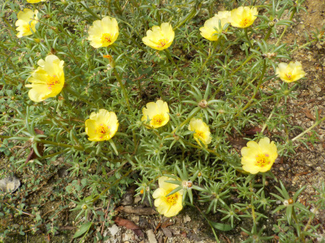
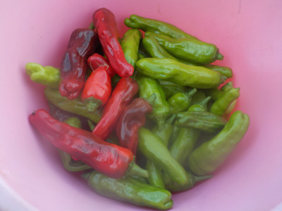
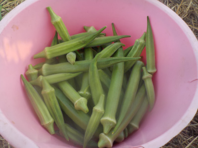

遊びで植物を育てよう
2022/08/20
マツバボタンって増やせるのかな。

毎年こぼれタネで咲いてるマツバボタンですが、これが沢山生えてたらいいですよね。
タネを採っておこうかな。挿し芽でも簡単に増えるみたいなので、やってみようかな。
【ページTOP】
【8月TOP】
【園芸TOP】
2022/08/06
シシトウ大量です。

収獲し忘れて完熟して赤くなったシシトウって彩りにいいですね。
味はたぶん緑の方が美味しいと思うけど、料理した時美味しそうに見えます。
何個かは完熟用にして、収獲しないでおこうかな。
【ページTOP】
【8月TOP】
【園芸TOP】
2022/08/06
オクラ大量です。

ちょっと前くらいからオクラを大量に収獲してます。
ネバネバは体にいいっていう人がいますが、どうなんでしょうね。
美味しいので食べてます。
【ページTOP】
【8月TOP】
【園芸TOP】
過去の日記
【2024年8月の日記】
【2023年8月の日記】
【2022年8月の日記】
【2021年8月の日記】
【2020年8月の日記】
【2019年8月の日記】
【2018年8月の日記】
【2017年8月の日記】
【2016年8月の日記】
【2015年8月の日記】
【2014年8月の日記】
【2013年8月の日記】
【2012年8月の日記】
【ページTOP】
【8月TOP】
【園芸TOP】
夏場の活動は朝と夕です。
【おいしいものを食べよう。】【しっかり寝よう。】
【ソロ活をしよう!】【季節感のあることをしよう。】【動画視聴はほどほどに。】【当サイトの全てのコンテンツは無断転載禁止です。】